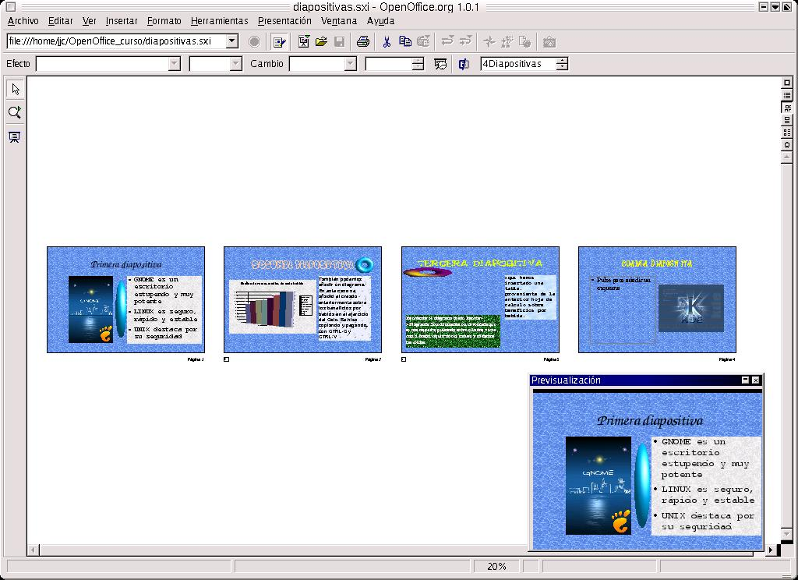
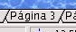
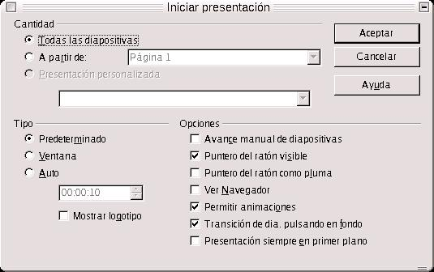
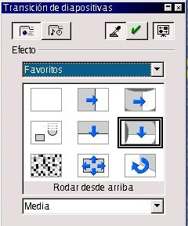
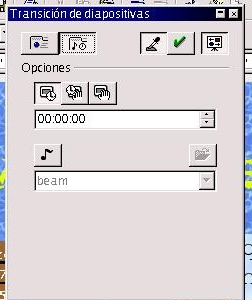
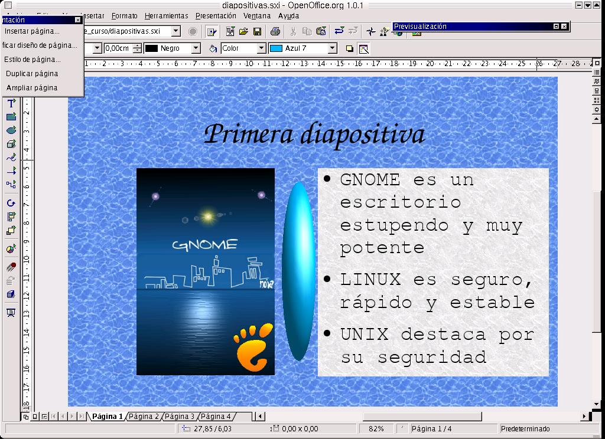
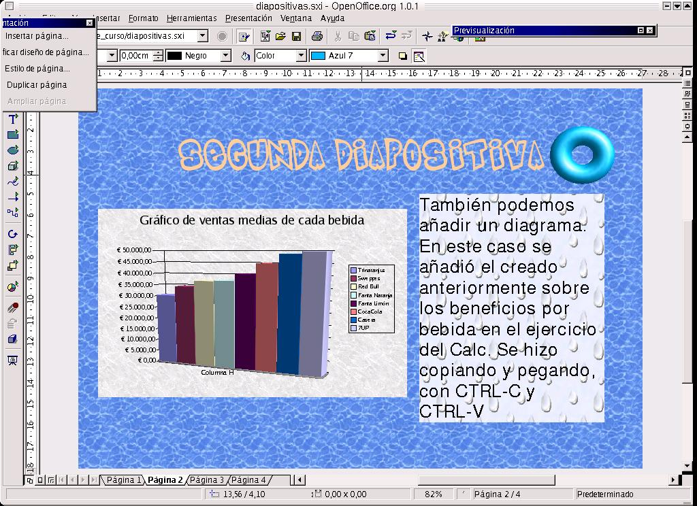
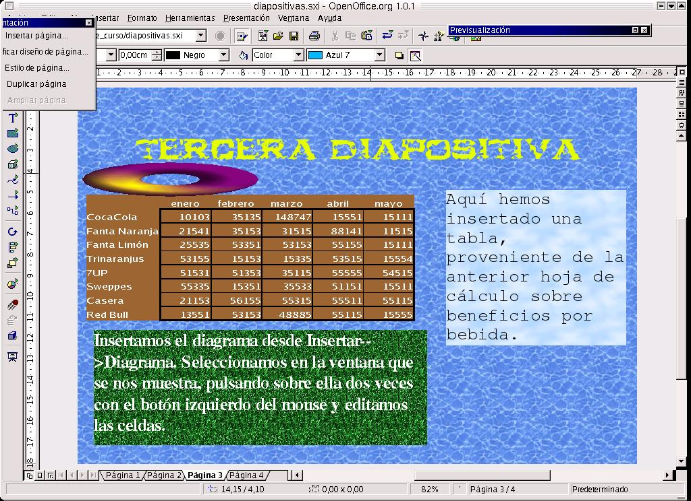
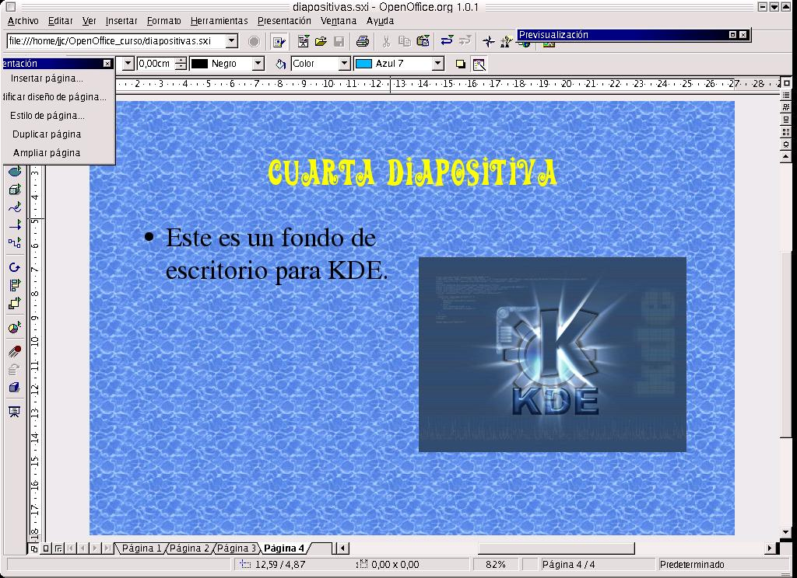

| Herramientas en GNU/LINUX para estudiantes universitarios: La suitte ofimática OpenOffice.org 1.0.1 | ||
|---|---|---|
| Anterior | Capítulo 5. OpenOffice.org Impress | Siguiente |
Para entender cómo trabajar con una diapositiva, vamos a hacer una presentación nueva. Para crearla seguimos el proceso anterior, indicando que la presentación esté vacía, y seleccionamos cualquiera de los diseños que se nos presenten.
Al seleciconar el diseño, e indicarle que la cree, en el botón Crear, nos aparece en el entorno de trabajo un boceto de la misma, en el cual se nos indica que tenemos que insertar una serie de elementos.
Podemos añadir imágenes, esquemas, textos, animaciones, hojas de cálculo, diseños, etc.., siguiendo las instrucciones que nos aparecen en el entorno de trabajo.
Después de hecer la primera diapositiva, añadimos dos más. El objeto es ver más tarde cómo secuenciar las diapositivas. Los estilos se pueden elegir libremente.
Para crear las diapositivas, nos movemos al menú Insertar-->Página, seleccionamos con un doble clic en el diseño de página que deseemos. Vamos creando poco a poco las diapositivas y poniendo las imágenes.
Una vez creadas las tres diapositivas, debemos aprender a secuenciarlas para poder crear la presentación. Para ello debemos cambiar nuestra forma de visualizar las mismas, yéndonos al Menú Ver-->Plan de Trabajo-->Modo Diapositivas.

En dicho modo, aparecen las diapositivas que he creado, en una secuencia. Yo puedo mover la diapositiva de una posición a otra, según si quiero que aparezca antes o después. Para ello, la selecciono, mantengo presionado el botón izquierdo del ratón y la arrastro hasta su nueva posición.
A su vez puedo duplicar una diapositiva, la cual será insertarda a continuación de la diapositiva origen. Para ello me voy al menú Insertar-->Duplicar Página.
Para eliminarla, pulso sobre la pestaña inferior

que contenga el nombre de la página o diapositiva, con el botón derecho del ratón. Aparecerá un cuadro de diálogo, en el cual debo seleccionar Eliminar Página.
Una vez que ya tenemos tres diapositivas creadas, podemos diseñar una serie de transiciones entre las mismas, que van a configurar la presentación. Se define transición como la forma en que se va a pasar de una diapositiva a otra dentro de la misma presentación.
Primero configuraremos la presentación. En el menú presentación, nos vamos a Configuración de la Presentación. Aquí debemos definir si se van o no a presentar todas las diapositivas, o si realizaremos una presentación personalizada. Debemos indicar el tipo de presentación:
Predeterminada. La presentación se visualizará en pantalla completa.
Ventana. Se ejecuta en la misma ventana en que está el documento.
Automática. Con visualización en pantalla completa, repitiéndose la misma de forma constante cada vez que el usuario la finalice.

Dentro de Opciones, le indicaré si deseo que el avance entre diapositivas sea automático o manual, si quiero que se vea el puntero del ratón mientras se visualiza la presentación, o que aparezca con forma de pluma, si deseo permitir la aparición de animaciones y otras más.
Para definir las transiciones, nos vamos al modo Dibujo, en Menú Ver-->Plan de Trabajo-->Modo Dibujo. Ahora nos vamos al Menú Presentación-->Transición de Diapositivas.

Nos aparece una ventana de diálogo, en la cual hemos de seleccionar, dentro del botón Efecto, el grupo de efectos, el efecto que se va a aplicar a la diapositiva actual y la velocidad en la que se va a presentar. Al pulsar en el botón Opciones, aparecen las de:
Transición automática, en la que debemos definir el tiempo que se visualizará la diapositiva.
Ejecución de los efectos de objetos automáticos y transición manual.
Seleccionar un sonido para la transición, que puede estar de entre la lista o podemos proporcionar la ruta del archivo que contiene al sonido.

Otra forma de diseñar la transición entre diapositivas, consiste en hacerlo desde el Modo Diapositiva. Una vez situados en dicho modo de trabajo, seleccionamos la diapositiva con la que deseamos trabajar, después pulsamos con el botón derecho sobre ella y en el cuadro emergente resultante seleccionamos Transición de Diapositivas.
Una vez hecho esto, podemos pasar a ver la presentación entera, en Presentación-->Visualizar Presentación.
Un ejemplo de diapositiva es el siguiente:
Tenemos cuatro diapositivas distintas.



